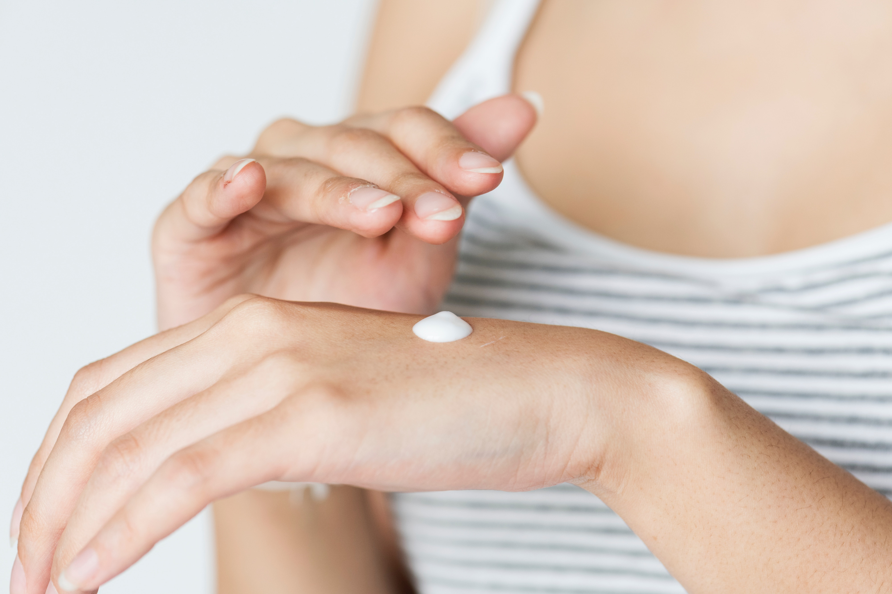

I have always battled acne, but it seemed that adulthood kicked it up a notch. As a woman of color who suffers from Post Inflammatory Hyperpigmentation. PIH is basically the darkening of the skin pigment due to increased amounts of melanin. In other words, acne, scratches, insect bites, etc., are public enemy number one. Any acne that appears on my face will leave a dark spot. To control my PIH, I had to find a solution to my acne. After, obsessively researching and browsing for options, I found Curology. Curology, makes acne care accessible to everyone who can’t afford to go to the dermatologist. Like many product reviews, there were successful and unsuccessful stories. I decided to take the plunge and subscribed.
How it works: Your Curology formula is based off your medical history, photos, and skin goals. You are also assigned to a Curology provider who will get to know your skin. You can exchange messages, let them know what is and isn’t working, and upgrade your Rx.
Price: $24.90 a month. You can delay your medication if you are not done with your current prescription.
Review: I have been using Curology for 1.5 years now and it has been heaven sent. I rarely get any acne, maybe 1 or 2 a month. I have used 3 different prescriptions and have not had any negative effects. This has helped tremendously in controlling my PIH. Overall, I highly recommend this product to any one that may be suffering from acne. I will keep using it until it stops working. Just know that it won’t clear overnight, and you must be patient.
